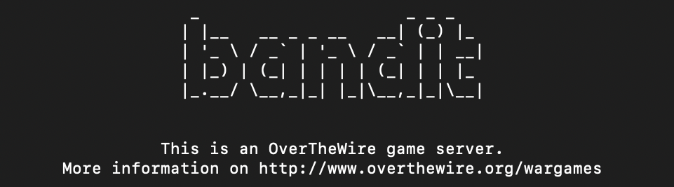

This is a very fun way to learn about Linux commands. It also serves as an introduction to capture the flag games. I learnt how to use commands like ssh, scp, tar, gzip, bzip2, base64, tr, s_client. I also learnt about ports, routers and the Internet.
Some levels required knowledge of SSL/TLS. SSL is a technique used to create secure and encrypted communication channels over any network. But SSL has some flaws which are solved by TLS (Transport Layer Security). Infact, these days, SSL certificates ar completely replaced by TLS ones. s_client is a command that helps us check whether the SSL/TLS encryption is being used or not.
I also learnt about RSA encryption. RSA involves the product of two very large prime numbers. It is used to get a private and a public key.
I am currently on level 17
